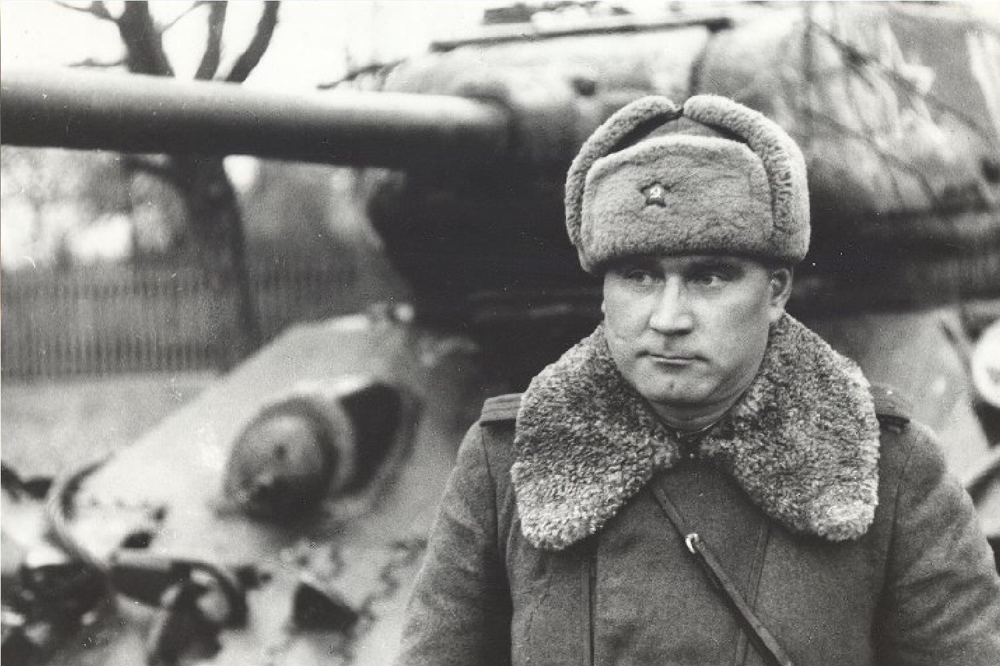
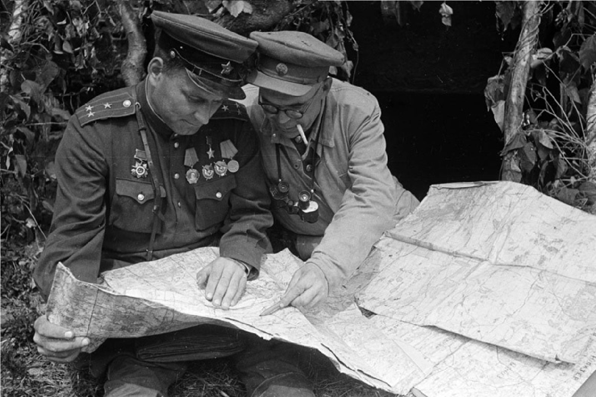

|  |
Якубовский, Иван Игнатьевич — советский военачальник, генерал-полковник, участник Великой Отечественной войны.
Иван Игнатьевич Якубовский родился 25 декабря 1911 года в деревне Зайцево (ныне в составе Могилевской области). Он начал свою военную карьеру в Российской императорской армии, а после революции 1917 года продолжил службу в Красной армии.
Во время Великой Отечественной войны Якубовский занимал различные командные должности. Он отличился в боях на различных фронтах, его командование способствовало успешным операциям советских войск. Одной из важнейших операций с его участием была оборона Минска, он также участвовал в других крупных наступательных операциях, таких как Ясско-Кишинёвская операция.
|
|
Якубовский был награждён множеством орденов и медалей за свои заслуги в военном деле, в том числе орденом Ленина, орденом Красного Знамени и орденом Отечественной войны I и II степени. После войны он продолжал службу, занимая различные высокие должности в советской армии, а также принимал участие в преподавательской деятельности.
Иван Игнатьевич Якубовский скончался 16 января 1976 года. Его жизнь и военная карьера оставили заметный след в истории советских вооруженных сил.
|
 |